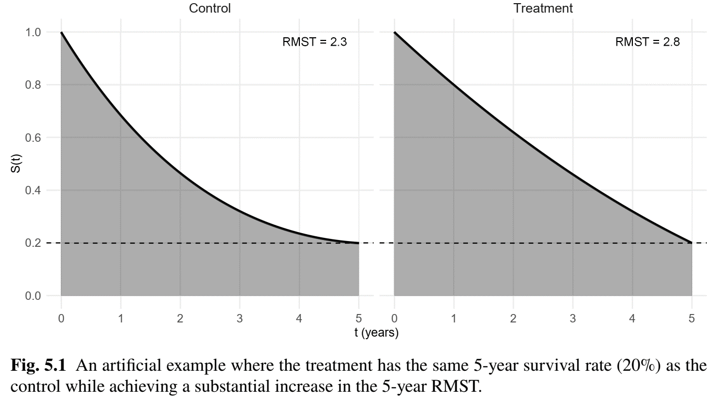
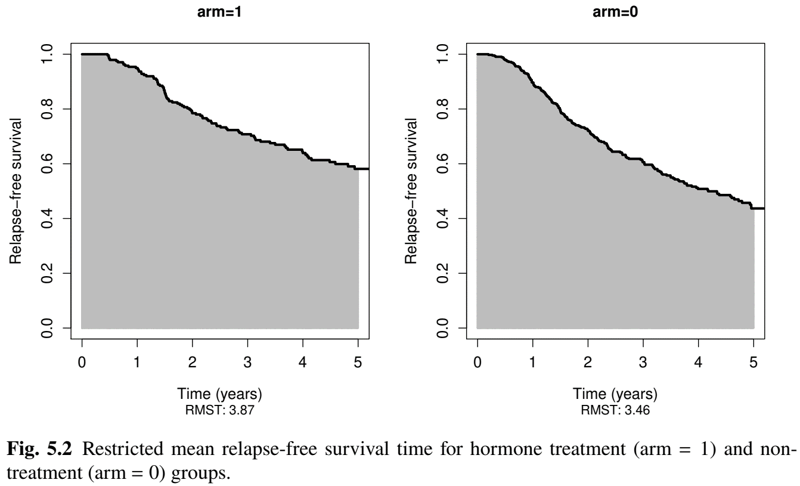
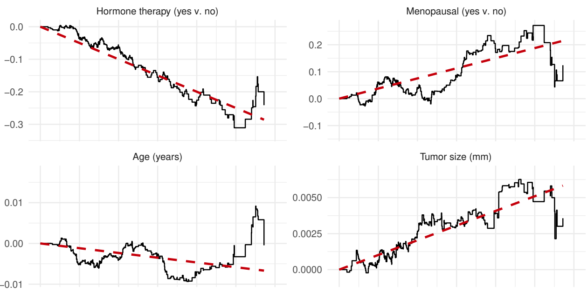

Chapter 5 - Other Non-/Semi-Parametric Methods
Department of Biostatistics & Medical Informatics
University of Wisconsin-Madison
Restricted Mean Survival Time (RMST)
Additive Hazards (AH) Model
Proportional Odds (PO) Model
Accelerated Failure Time (AFT) Model
\[\newcommand{\d}{{\rm d}}\] \[\newcommand{\T}{{\rm T}}\] \[\newcommand{\dd}{{\rm d}}\] \[\newcommand{\pr}{{\rm pr}}\] \[\newcommand{\var}{{\rm var}}\] \[\newcommand{\se}{{\rm se}}\] \[\newcommand{\indep}{\perp \!\!\! \perp}\] \[\newcommand{\Pn}{n^{-1}\sum_{i=1}^n}\]

\[ (X_i, \delta_i, Z_i)\,\,\, i=1,\ldots, n \]
Inverse probability censoring weighting (IPCW) \[\begin{equation}\label{eq:nonhaz_rmst_ipcw} n^{-1}\sum_{i=1}^n \frac{\delta_i}{G(X_i\mid Z_i)}Z_i \{X_i\wedge\tau - g^{-1}(\hat\beta^\T Z_i)\} = 0, \end{equation}\]
survRM2::rmst2() (I)(time, status): \((X, \delta)\)arm: vector of indicators (1-0) for treatment vs controltau: scaler \(\tau\)covariates: optional covariate matrix (or data frame)survRM2::rmst2() (II)covariates = NULL)
obj$RMST.arm1 & obj$RMST.arm0: two lists of group-wise inference results for arm = 1 and 0obj$unadjusted.result: matrix containing estimates, 95% confidence intervals, and \(p\)-values for \(\mu_1(\tau) - \mu_0(\tau)\), \(\mu_1(\tau)/\mu_0(\tau)\), and \(L_1(\tau)/L_0(\tau)\)covariates supplied)
obj$RMST.difference.adjusted: regression results for \(g(x) =x\)obj$RMST.ratio.adjusted: regression results for \(g(x) = \log(x)\)obj$RMTL.ratio.adjusted: regression results for \(g(x) = \log(\tau - x)\)arm=1) vs non-hormone (arm=0)# Two sample: hormonal and non-hormonal groups on 5-year RMST
obj <- rmst2(time = df$time / 12, status = df$status,
arm = df$hormone - 1, tau = 5)
obj
# Restricted Mean Survival Time (RMST) by arm
# Est. se lower .95 upper .95
# RMST (arm=1) 3.87 0.104 3.666 4.074
# RMST (arm=0) 3.46 0.084 3.295 3.625
#
# Restricted Mean Time Lost (RMTL) by arm
# Est. se lower .95 upper .95
# RMTL (arm=1) 1.13 0.104 0.926 1.334
# RMTL (arm=0) 1.54 0.084 1.375 1.705Two-sample
# Between-group contrast
# Est. lower .95 upper .95 p
# RMST (arm=1)-(arm=0) 0.410 0.148 0.672 0.002
# RMST (arm=1)/(arm=0) 1.118 1.042 1.201 0.002
# RMTL (arm=1)/(arm=0) 0.734 0.595 0.905 0.004
#
#----- Graphic -------------------------------------------------
# Graphical display of the group-specific RMST
# as area under the KM curves
plot(obj, xlab="Time (years)", ylab = "Relapse-free survival",
col.RMST = "gray", col.RMTL = "white", cex.lab = 1.2,
cex.axis = 1.2, col = "black", xlim = c(0,5))
# Regression with all the other covariate
obj_reg <- rmst2(time = df$time / 12, status = df$status,
arm = df$hormone - 1, covariates = df[, 5:11], tau = 5)
#----- Print out multiplicative model on RMST ---------------
obj_reg$RMST.ratio.adjusted
# coef se(coef) z p exp(coef) lower .95 upper .95
# intercept 1.574 0.153 10.257 0.000 4.824 3.571 6.516
# arm 0.129 0.039 3.318 0.001 1.137 1.054 1.227
# age 0.006 0.004 1.537 0.124 1.006 0.998 1.013
# meno -0.111 0.072 -1.539 0.124 0.895 0.777 1.031
# size -0.004 0.002 -2.132 0.033 0.996 0.992 1.000
# grade -0.120 0.035 -3.463 0.001 0.887 0.828 0.949
# nodes -0.032 0.006 -5.421 0.000 0.969 0.957 0.980
# ...Residuals
Aalen’s nonparametric AH model \[\begin{equation}\label{eq:non_haz:add_haz1} \lambda(t\mid Z)=\lambda_0(t)+\beta(t)^\T Z(t), \end{equation}\]
addhazard::ah()Surv(time, status) ~ covariates: same formula as in coxph()ties = FALSE: specify and de-tie time (add a small noise)ah
obj$coef: \(\hat\beta\), obj$var: \(\hat\var(\hat\beta)\)summary(obj): outputs regression tabletimereg::aalen()Surv(time, status) ~ covariates: same formula as coxph()aalen
obj$cum: matrix containing \(t\) and \(\hat B(t)\)obj$var: matrix containing \(t\) and pointwise \(\hat\var\{\hat B(t)\}\)summary(obj): outputs test results for \(H_0: \beta(t)\equiv 0\)# Add a small random number to time to get rid of ties
df$time.dties <- df$time/12 + runif(nrow(df),0, 1e-12)
# fit an additive hazard model
obj <- ah(Surv(time.dties, status) ~ hormone + meno + age + size +
grade + nodes + prog + estrg, data = df, ties = FALSE)
# print out summary
summary(obj)
# coef se lower.95 upper.95 z p.value
# hormone -0.0497713 0.0170343 -0.0831585 -0.0163842 -2.922 0.00348 **
# meno 0.0373581 0.0242005 -0.0100749 0.0847911 1.544 0.12266
# age -0.0011667 0.0013891 -0.0038895 0.0015560 -0.840 0.40096
# size 0.0010200 0.0007299 -0.0004107 0.0024506 1.397 0.16231
# ...
timereg::prop.odds()Event(time, status) ~ covariates: similar to Surv(time, status) ~ covariates in coxph()cox.aalen
obj$gamma: \(\hat\beta\); obj$var.gamma: \(\hat\var(\hat\beta)\)obj$cum: matrix containing \(t\) and \(\exp\{\hat h_0(t)\}\)summary(obj): summarizes regression results# Fit a PO model
obj <- prop.odds(Event(time, status) ~ hormone + meno + age + size +
grade + nodes + prog + estrg, data = df)
# print out summary
summary(obj)
# Coef. SE z P-val lower2.5% upper97.5%
# hormone2 -0.52200 0.17000 -3.0800 2.08e-03 -0.855000 -0.18900
# meno2 0.49000 0.24300 1.9100 5.66e-02 0.013700 0.96600
# age -0.02240 0.01280 -1.7500 8.09e-02 -0.047500 0.00269
# size 0.01150 0.00611 1.7800 7.57e-02 -0.000475 0.02350
# ...
aftgee::aftgee()Surv(time,status) ~ covariates: same formula as in coxph()aftgee
obj$coef.res: \(\hat\beta\)obj$var.res: \(\hat\var(\hat\beta)\)summary(obj): summarizes regression results# Fit an AFT model
set.seed(123) # SE is based on resampling
obj <- aftgee(Surv(time, status) ~ hormone + meno + age + size + grade +
nodes + prog + estrg, data = df,
B = 500) # Number of resamples
# print out summary
summary(obj)
# Estimate StdErr z.value p.value
# (Intercept) 4.262 0.410 10.40 <2e-16 ***
# hormone2 0.320 0.092 3.47 0.001 ***
# meno2 -0.270 0.148 -1.82 0.068 .
# age 0.013 0.007 1.69 0.092 .
# size -0.006 0.003 -1.89 0.059 .
# ...pseudo packagetimereg::cox.aalen()survRM2::rmst2()addhazard::ah() (semiparametric: constant difference)timereg::aalen() (nonparametric: time-varying difference)timereg::prop.odds()aftgee::aftgee() (semiparametric: unspecified error distribution)survival::survreg() (parametric error distribution)